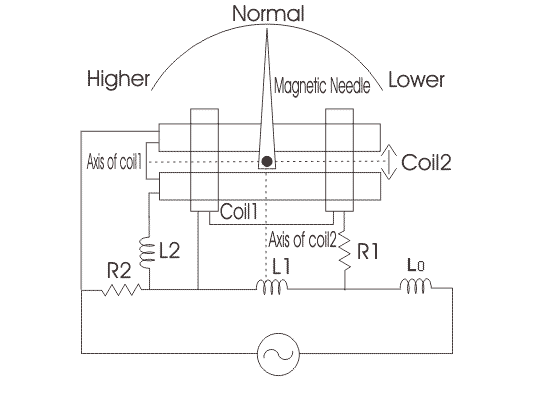

The main principle of working of weston type frequency meter is that "when an electric current flows through the two coils which are perpendicular to each other, due to these currents some magnetic fields will produce and thus the magnetic needle will deflects towards the stronger magnetic field showing the measurement of frequency on the meter".
Construction of weston frequency is as compared to ferrodynamic type of frequency meter. In order to construct a circuit diagram we need two coils, three inductors and two resistors. Given below is the circuit diagram for the weston type frequency meter.

Axis of both coils are marked as shown. Scale of the meter is calibrated such that at standard frequency the pointer will take position at 45°. Coil 1 contains a series resistor marked R1 and reactance coil marked as L1, while the coil 2 has a series reactance coil marked as L2 and parallel resistor marked as R2. The indcuctor which is marked as L0 is connected in series with the supply voltage in order to reduce the higher harmonic means here this inductor is working as a filter circuit. Let us look at the working of this meter.
Now when we apply voltage at standard frequency then the pointer will take normal position, if there increase the frequency of the applied voltage then we will see that the pointer will moves towards left marked as higher side as shown in the circuit diagram. Again we reduce the frequency the pointer will start moving towards the right side, if lower the frequency below the normal frequency then it cross the normal position to move towards left side marked lower side as shown in the figure.
Now let us look at the internal working of this meter. Voltage drop across an inductor is directly proportion to frequency of the source voltage, as we increase the frequency of the applied voltage the voltage drop across the inductor L1 increase that means the voltage impressed between the coil 1 is increased hence the electric current through the coil 1 increase while the electric current through the coil 2 decreases. Since the electric current through the coil 1 increases the magnetic field also increases and the magnetic needle attracts more towards the left side showing the increment in the frequency. Similar action will takes if decrease the frequency but in this the pointer will moves towards the left side.
 by
by